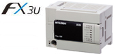
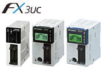
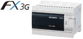
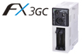
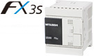

MELSEC-F Series Unit Utama

Unit Utama PLC FX

Beragam pilihan dalam seri FX menawarkan banyak pilihan yang sesuai dengan anggaran dan aplikasi Anda.
Anda pasti akan menemukan model yang memenuhi kebutuhan Anda.
| FX Series Lineup | |
|---|---|
| Untuk kecepatan tinggi, fungsionalitas tinggi, dan kemampuan ekspansi  |
Memory Memori RAM 64.000 langkah sudah terpasang. Kaset memori flash juga dapat dipasang. Kecepatan pemrosesan Instruksi dasar: 0,065 μs/instruksi (instruksi LD) Instruksi aplikasi: 0,642 hingga 100 μs/instruksi Perangkat Relai bantu: 7.680 poin Pewaktu: 512 poin Penghitung: 235 poin Daftar data: 8.000 poin Register ekstensi: 32.768 poin Daftar berkas ekstensi (memori opsional): 32.768 poin Instruksi aplikasi Daftar instruksi aplikasi yang didukung Disini |
| Untuk kecepatan tinggi, pengkabelan berkurang, ruang berkurang  |
Memory Memori RAM 64.000 langkah terpasang. Kaset memori flash juga dapat dipasang. Kecepatan pemrosesan Instruksi dasar: 0,065 μs/instruksi (instruksi LD) Instruksi aplikasi: 0,642 hingga 100 μs/instruksi Perangkat Relai tambahan: 7.680 poin Pewaktu: 512 poin Penghitung: 235 poin Daftar data: 8.000 poin Register ekstensi: 32.768 poin Daftar berkas ekstensi (memori opsional): 32.768 poin Instruksi aplikasi Daftar instruksi aplikasi yang didukung Disini |
| Untuk komunikasi, ekspansi analog, dan hingga 256 kontrol I/O  Akan dihentikan |
Memory Memori EEPROM 32.000 langkah terpasang. Bebas baterai dan bebas perawatan. Kecepatan pemrosesan Instruksi dasar: 0,21 μs/instruksi (dalam mode standar) 0,42 μs/instruksi (dalam mode ekstensi) Instruksi aplikasi: 0,5 hingga 100 μs/instruksi (dalam mode standar) 1,2 hingga 100 μs/instruksi (dalam mode ekstensi) Perangkat Relai bantu: 7.680 poin Timer: 320 poin Penghitung: 235 poin Register data: 8.000 poin Register ekstensi: 24.000 poin Register berkas ekstensi: 24.000 poin Petunjuk aplikasi Daftar petunjuk aplikasi yang didukung Disini *1: model 14 pt, 24 pt hanya dapat menghubungkan 1 papan |
| Untuk mengurangi ruang dan mengurangi kabel  Akan dihentikan |
Memory Memori EEPROM 32.000 langkah terpasang. Bebas baterai dan bebas perawatan. Kecepatan pemrosesan Instruksi dasar: 0,21 μs/instruksi (dalam mode standar) 0,42 μs/instruksi (dalam mode ekstensi) Instruksi aplikasi: 0,5 hingga 100 μs/instruksi (dalam mode standar) 1,2 hingga 100 μs/instruksi (dalam mode ekstensi) Perangkat Relai bantu: 7.680 poin Timer: 320 poin Penghitung: 235 poin Register data: 8.000 poin Register ekstensi: 24.000 poin Register berkas ekstensi: 24.000 poin Petunjuk aplikasi Daftar petunjuk aplikasi yang didukung Disini |
| Untuk komunikasi, ekspansi analog, dan biaya rendah  |
Memory Memori EEPROM 16.000 langkah sudah terpasang. Bebas baterai dan bebas perawatan. (Kapasitas program adalah 4.000 langkah) Kecepatan pemrosesan Instruksi dasar: 0,21 μs/instruksi Instruksi aplikasi: 0,5 hingga 100 μs/instruksi Perangkat Relai bantu: 1.536 poin Timer: 138 poin Penghitung: 67 poin Register data: 3.000 poin Instruksi aplikasi Daftar instruksi aplikasi yang didukung Disini |